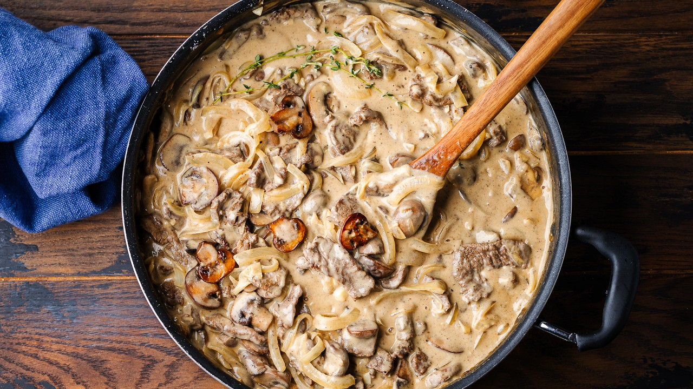

Stoled from YouTube. Today we're making beef stroganoff. This is a hearty recipe that's perfect for fall and winter. I used flank steak, but other cuts such as skirt, ribeye, sirloin, or even fillet if you're feeling fancy will work nicely.
Original video
Ingredients
For the seared steak
- 1 1/2 pounds (680g) flank steak - cut into thin 2-inch long strips against the grain
- 1 tablespoon (17g) Worcestershire sauce
- 1 teaspoon salt
- 1/4 teaspoon pepper
- 1/2 teaspoon nutmeg
- 2 teaspoons allspice
- 2 tablespoons (28g) vegetable oil
For the stroganoff
- 1 pound (454g) wide egg noodles
- 6 tablespoons (84g) olive oil - divided
- 1 1/2 pounds (680g) cremini mushrooms - thick sliced
- 6 tablespoons (84g) butter - divided
- 2 medium yellow onions - sliced
- 6 cloves garlic - minced
- 1/4 cup (32g) flour
- 1/2 cup (120g) dry white wine
- 3 cups (720g) low-sodium beef stock - divided
- 1/2 cup (120g) heavy cream
- 1/2 cup (120g) sour cream
- 2 tablespoons (30g) Dijon Mustard
- 2 tablespoons (34g) Worcestershire sauce
- 1 cup (240g) pasta water - will not need all of it
- 2 tablespoons flat leaf parsley - minced, optional
- Salt and pepper - to taste
Steps
- Need to watch the video, lol... cook stuff...
- Chop veggies and meats, and then season...
- Nom?
Home